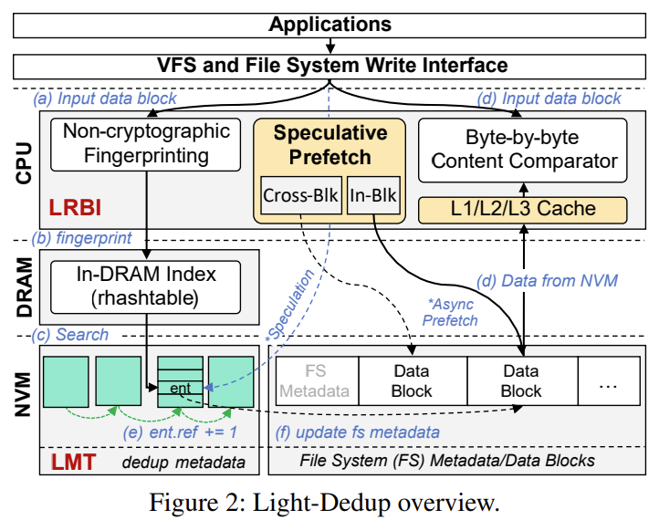
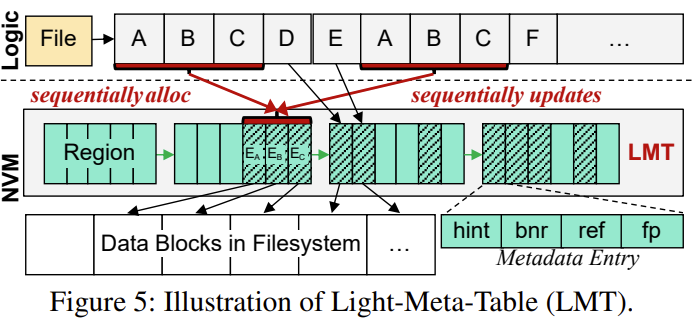
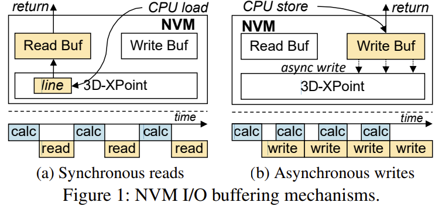

| Venue | Category |
|---|---|
| ATC'23 | Deduplication in NVM |
Light-Dedup: A Light-weight Inline Deduplication Framework for Non-Volatile Memory File Systems1. SummaryMotivation of this paperLight-DedupImplementation and Evaluation2. Strength (Contributions of the paper)3. Weakness (Limitations of the paper)4. Some Insights (Future work)
motivation
NVM's cost can be reduced by eliminating redundant data blocks
lacks complete insights into NVM's I/O mechanisms
deduplication can enlarge the logical space and reduce the amortized cost of storage devices
deduplication for expensive NVM is profitable and urgent
problem
traditional disk-based deduplication approaches (using the cryptographic hash) to identify redundant data blocks
do not fit well with NVM --> shift the performance bottleneck from I/O to CPU
existing works: lack of comprehensive insights into NVM's I/O mechanisms
the long latency of uncached reads hinders the performance of content-comparison
trade slow duplicate writes for faster reads
goal
a novel light-weight inline deduplication framework for NVM file systems
maximizing the deduplication performance based on NVM characteristics
retaining low deduplication metadata I/O amplification
observations
cryptographic hash calculation dominates up to 64.9% of the whole write
non-cryptographic hash-based redundant block identification adds negligible overheads to the normal non-deduplication write path
deduplication performance is significantly limited by the long read latency
read/write asymmetry under low thread count is not enough
current hardware prefetcher of Intel 64-bit arch fails to remedy the drawbacks of NVM's long media read latency
design for DRAM, prefetch two cache lines ahead
intend to achieve asynchronous reads (manually)
leverage memory prefetch instructions
metadata I/O amplification in NVM deduplication
Ideal
40 bytes
All-in-NVM
use an in-NVM hash table to store and index the deduplication metadata to reduce DRAM usage (random access)
Entry-based
metadata in NVM and maintain the in-DRAM index to locate them (random access in aged systems) --> free list
Arch

if an entry is found, but the content of the stored block and the input one are different
not allocate an entry for it, not affect the correctness of the deduplication system
Light-Redundant-Block-Identifier (LRBI)
non-cryptographic hash + speculative-prefetch-based byte-by-byte content comparison
In-Block and Cross-Block prefetch --> asynchronously load speculated data into CPU/NVM buffers
In-Block Prefetch (IBP)
step-1: leverage the large access granularity of NVM (e.g., 256 bytes), issue 16 prefetch instructions
step-2: prefetch the remaining
Cross-Block Prefetch (CBP)
exploit the parallelism among CPU tasks
speculatively prefetch the to-be-compared data block
using a hint field in the deduplication metadata entry to record the related information
trust degree
CBP are frequently triggered when the workload exhibits good deduplication continuousness
most hints are trusted
otherwise, fall back to IBP
Light-Meta-Table (LMT)
mapping from FP to PBA, hint of where and whether to prefetch the to-be-compared block
In-DRAM Index: search for the entry
In-NVM Layout: allocate meta entries in a coarse region
region-based layout --> for locality, in a block size (4KiB)
linked by a 8 byte pointer to avoid static allocation

implementation
based on NOVA
evaluation
trace
FIO, FIU, Homes (collected by authors on their OS Lab server)
baseline
NOVA, NV-Dedup, DeNova
microbenchmarks
throughput of 4 KiB I/O writes
throughput of 2 MiB I/O writes
real-world scenarios
speculative prefetch efficiency
metadata I/O amplification in LMT
perform an in-depth analysis of how deduplication can be affected by NVM's I/O mechanisms
Light-Redundant-Block-Identifier (LRBI)
non-cryptographic hash with speculative-prefetch-based content-comparison
hide its media read latency
Light-Meta-Table (LMT)
region-based layout --> with a good locality and low metadata I/O amplification
managing deduplication metadata in the region (i.e., 4KiB block) granularity to maintain access locality
Light-Dedup based on NOVA for implementation
writing: some symbols are hard to follow
prefetch
hard to understand the rationale of CBP
NVM (Optane DCPMM)
byte-addressability, persistence, and low latency
much more expensive than HDD and SSD
five common I/O features of NVM
asymmetry in read/write bandwidth
read bandwidth of NVM is up to 3x than its write
I/O with buffers

hide long media write latency
coarse access granularity
NVM has a larger access granularity than a cache line
long media read latency
synchronous data fetch mechanism
memory interface
can be accessed by CPU store/load